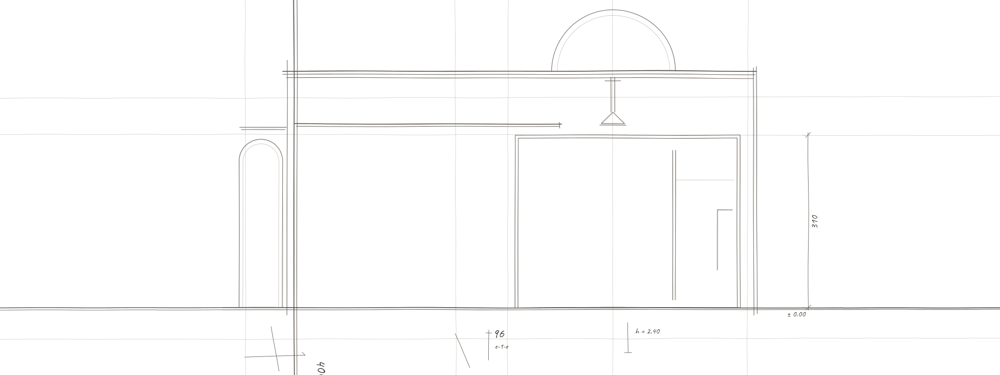

Some projects I designed as an art director, and some prints and drawings I made in my free time.
Take anything off the wall to look closer.
Merve Uzuner Product Designer · UX/UI Designer

Some projects I designed as an art director, and some prints and drawings I made in my free time.
Take anything off the wall to look closer.